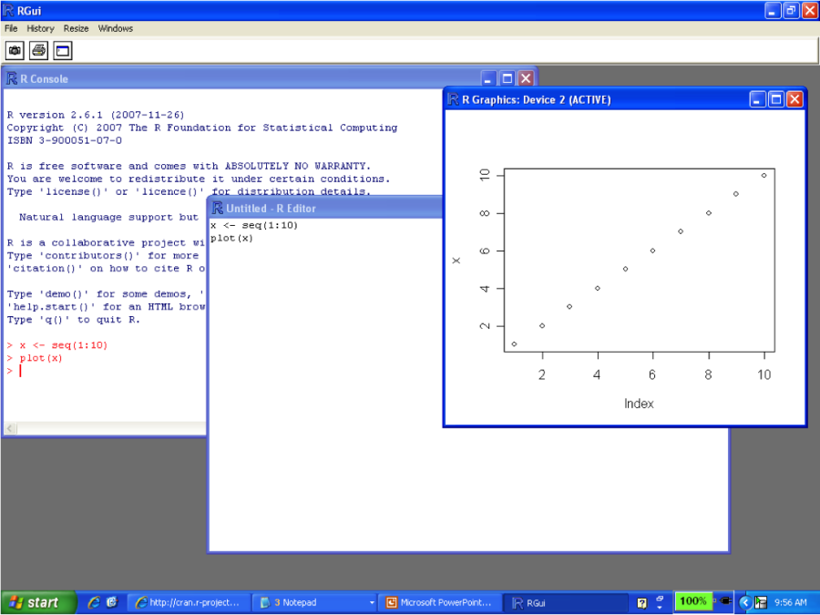

Interagir avec R
Lire et écrire des objets
Manipuler des objets
Séance 2: Introduction au langage R
https://econumuds.github.io/BIO109/cours2/
Dominique Gravel
Laboratoire d'écologie intégrative
Contenu du cours
5 raisons pour utiliser R
R est un langage de programmation en source libre conçu pour l'analyse statistique, l'analyse de données et la visualisation. R n'est cependant pas optimisé pour la performance, mais néanmoins il est fort utile pour l'apprentissage de la programmation en raison de sa convivialité (!) et de sa facilité de débuggage (!!)
Les arguments en faveur de R:
- Gratuit et ouvert
- Une façon de communiquer avec la communauté scientifique
- Diversité d'utilisateurs et de contributions
- En phase avec les développements les plus récents en écologie
- Intégration du langage de programmation avec les outils de visualisation et de manipulation des données
Interagir avec R sur la console

Utiliser R Studio

Exercice : installer et lancer R Studio
Exercice : interaction avec la ligne de commande
Le plus simple est d'utiliser R comme une calculatrice.
Que donne l'opération suivante ?
2 + 16 x 24 - 56
Répertoire de travail
Savoir où on est
getwd()
## [1] "/Users/SteveVissault/Documents/Git/BIO109/cours2/pres"
Changer le répertoire de travail
setwd("/home/local/USHERBROOKE/grad3002/Bureau/BIO109/depot/donnees")
## Error in setwd("/home/local/USHERBROOKE/grad3002/Bureau/BIO109/depot/donnees"): impossible de changer de répertoire de travail
Environnement de travail
Obtenir le contenu du dossier dans le répertoire de travail
dir()
## [1] "assets" "donnees" "index.html"
## [4] "index.md" "index.Rmd" "libraries"
## [7] "test_liste.Rdata" "test.Rdata" "test.xt"
Obtenir la liste des objets en mémoire
ls()
## character(0)
Environnement de travail
Effacer un objet en mémoire
test <- 1
ls()
## [1] "test"
rm(test)
ls()
## character(0)
Le concept d'objet
Un objet peut contenir de l'information de toute nature: un tableau de données, les résultats d'une analyse, une figure, une fonction
La commande pour créer un objet est composé de trois parties: i) une valeur d'intérêt ii) un identifiant iii) l'opérateur d'assignation
a <- c(1,2)
a
## [1] 1 2
Le concept d'objet
Notons que les opérateurs <- et = sont équivalents pour attribuer une valeur à un objet. L'opérateur <- peut être difficile à lire ou confondu avec le signe -. Cependant, la recommandation est de limiter le signe = à des opérations mathématiques et d'utiliser <- pour l'assignation de valeurs.
Types d'objets: scalaires
Les données numériques peuvent être déclarées de différentes manières
a <- 1
a
## [1] 1
b <- 1.1
b
## [1] 1.1
c <- 1e-6
c
## [1] 1e-06
Types d'objets: scalaires
On peut également déclarer des séries de caractères
test <- "test"
test
## [1] "test"
Finalement, des séries de caractères peuvent être collées entre elles
collage <- paste("a","b", sep="")
collage
## [1] "ab"
Types de données: booléens
Le type booléen (logical) permet de représenter les états TRUE (1) et FALSE (0) et de faire des opérations mathématiques sur ces objets
vrai <- TRUE
faux <- FALSE
vrai
## [1] TRUE
vrai + faux
## [1] 1
Types de données: facteurs
R est d'abord un langage utilisé pour les statistiques, et par conséquent on y retrouve un type de données utilisé pour la réalisation de tests d'hypothèse, qui n'est pas standard à tous les langages. Les facteurs sont des données de catégories comme des traitements expérimentaux.
MesFacteurs <- factor(c(1,2,3,2,3,3,1,2))
MesFacteurs
## [1] 1 2 3 2 3 3 1 2
## Levels: 1 2 3
Types de données: conversions
R permet de convertir des objets en différents types de données lorsque le contenu le permet.
as.numeric(c("4","6"))
## [1] 4 6
as.character(c(4,6))
## [1] "4" "6"
Types de données: conversions
as.integer(2.6)
## [1] 2
as.factor(c("4","6"))
## [1] 4 6
## Levels: 4 6
Types de données: conversions
as.logical(0)
## [1] FALSE
as.logical(1)
## [1] TRUE
as.logical(2)
## [1] TRUE
Types de variables: vecteurs
Le vecteur est l'objet le plus important de R. On dit que le langage R est vectoriel, ce qui lui permet de réaliser des opérations optimisées pour ce type d'objet.
La façon la plus simple de déclarer un vecteur est (d'autres méthodes seront présentées plus loin):
MonPremierVecteur <- c(1,2,3,4,5)
MonPremierVecteur
## [1] 1 2 3 4 5
Exercice
Créez un vecteur contenant les valeurs [-1,2,5,9]. Vous pouvez calculer la racine carrée de ces nombres au moyen de la fonction sqrt()
Types d'objets: vecteurs
On peut accéder à une position sur le vecteur au moyen d'un index, indiqué par les []
MonPremierVecteur <- c(1,2,3,4,5)
MonPremierVecteur[3]
## [1] 3
On obtient un NA si on tente d'accéder à une position qui n'existe pas:
MonPremierVecteur <- c(1,2,3,4,5)
MonPremierVecteur[6]
## [1] NA
Exercice
Au moyen du vecteur créé précédemment, calculer le produit des valeurs aux positions 2 et 4.
Types d'objets: vecteurs
On obtient la dimension d'un vecteur ainsi:
length(MonPremierVecteur)
## [1] 5
Types d'objets: matrices
L'extension naturelle d'un vecteur est une matrice, soit une collection de vecteurs. R est également optimisé pour réaliser des opérations mathématiques et de manipulation de données sur ce type d'objet.
La commande de base pour créer une matrice est matrix()
MaMatrice <- matrix(c(1,2,3,4,5,6), nrow = 2, ncol = 3)
MaMatrice
## [,1] [,2] [,3]
## [1,] 1 3 5
## [2,] 2 4 6
Types d'objets: matrices
On accède à la ligne i et la colonne j au moyen de la commande suivante
MaMatrice[1,2]
## [1] 3
Types d'objets: matrices
On peut aussi accéder à des lignes ou des colonnes entières
MaMatrice[1,]
## [1] 1 3 5
MaMatrice[,1]
## [1] 1 2
Types d'objets: matrices
On obtient la dimension de la matrice ainsi
dim(MaMatrice)
## [1] 2 3
Types d'objets: matrices
Ou encore
nrow(MaMatrice)
## [1] 2
ncol(MaMatrice)
## [1] 3
Types d'objets: matrices
Les noms de colonnes et de lignes peuvent être modifiées
colnames(MaMatrice) = c("A","B","C")
rownames(MaMatrice) = c("X","Y")
MaMatrice
## A B C
## X 1 3 5
## Y 2 4 6
Exercice
Créez une matrice de 2 lignes et 5 colonnes remplie de chiffres tirés au hasard. Pour ce faire, vous pouvez utiliser la fonctions runif(). Calculez la somme de la première colonne au moyen de la fonction sum()
Astuce : pour obtenir de l'aide sur une fonction, essayez
?runif()
Type d'objets : listes
R peut organiser également des collections de données sous forme de liste. Ces collections peuvent être très hétérogènes et rassembler par exemple, des vecteurs et matrices, mais aussi des objets plus complexes et hiérarchiques comme des résultats d'analyses statistiques, et même des listes à l'intérieur de listes.
La création et l'indexation des listes est très similaire à celle des vecteurs et matrices
MaListe = list()
MaListe[[1]] = c(1,2)
MaListe[[2]] = matrix(c("A","B","C","D"), nrow = 2, ncol = 2)
Type d'objets : listes
Et de même on peut nommer les items d'une liste
names(MaListe) <- c("Element1","Element2")
MaListe
## $Element1
## [1] 1 2
##
## $Element2
## [,1] [,2]
## [1,] "A" "C"
## [2,] "B" "D"
Type d'objets: data.frame
Le data.frame est un objet d'une structure particulière à R, un hybride entre une matrice et une liste. Le data.frame se décrit comme un tableau de données, avec les rangées i et les colonnes j, ainsi que des noms de colonnes. Il n'est cependant pas un objet mathématique sur lequel on peut effectuer des opérations mathématiques comme les matrices.
test <- data.frame(a = c(1:5), b = c(11:15))
test
## a b
## 1 1 11
## 2 2 12
## 3 3 13
## 4 4 14
## 5 5 15
Type d'objets: data.frame
On peut néanmoins transformer un data.frame en matrice
as.matrix(test)
## a b
## [1,] 1 11
## [2,] 2 12
## [3,] 3 13
## [4,] 4 14
## [5,] 5 15
Type d'objets: data.frame
Ou inversement transformer une matrice en data.frame
test2 <- matrix(c(1:6), nrow = 3, ncol = 2)
as.data.frame(test2)
## V1 V2
## 1 1 4
## 2 2 5
## 3 3 6
Interactions avec l'extérieur
Lecture et écriture de fichiers
Lire un fichier txt
La lecture de fichiers est souvent l'étape la plus frustrante lorsque l'on travail avec R. Pour ce faire, nous utiliserons les fichiers sous format .txt, qui sont des fichiers de texte brut. Les fichiers .xls ou .xlsx peuvent être lus au moyen de librairies spécialisées, mais les convention sont d'utiliser un format minimal qui est utilisable sur l'ensemble des plateformes.
Lire un fichier txt
Nous allons utiliser le fichier 'quadrats.txt' pour cet exemple. On peut lire le fichier au moyen de la commande
quadrats <- read.table(file = './donnees/quadrats.txt', header = T, dec = ".", sep = ";", quote = TRUE)
## Error in read.table(file = "./donnees/quadrats.txt", header = T, dec = ".", : invalid quote symbol set
head(quadrats)
## Error in head(quadrats): objet 'quadrats' introuvable
Lire un fichier txt: anatomie des arguments
- 'file' : nom du fichier à lire
- 'header' : indique s'il y a un entête avec les noms de colonnes
- 'dec' : caractère utilisé pour délimiter les décimales
- 'sep' : caractère utilisé pour séparer les colonnes
- 'quote' : spécifie comment interpréter les chaînes de caractères
Note : l'objet retourné est par défaut un 'data.frame'. Il peut être ensuite converti, au besoin
Lire un fichier txt: erreurs courantes
- Mauvais nom de fichier
- Mauvais répertoire de travail
- Guillemets
- Type de séparateur de colonnes
- Présence de points
- Nom des colonnes
- Entrées vides
- Présence de caractères invisibles
- Mauvais encodage des données
- Type de données et d'objets
Écrire des fichiers
Il y a une grande diversité de façons d'enregistrer sur le disque des objets provenant de R. La façon la plus simple, versatile et qui permet les échanges entre différents logiciels est d'écrire sous format txt.
La syntaxe pour écrire une matrice ou un data.frame est aussi simple que pour lire un fichier txt
test <- matrix(runif(n = 10,min = 0,max = 1),nrow = 5,ncol = 10)
write.table(test, file = "test.xt")
Écrire des fichiers: save et .Rdata
Parfois les objets que l'on souhaite enregistrer ont une structure plus complexe qu'un tableau de données. R permet d'enregistrer ces objets dans un format qui lui est unique, le .Rdata. Ces objets sont compressés pour minimiser l'espace disque et ne peuvent être lus que par R.
test <- list()
test[[1]] <- 1
test[[2]] <- c(1:10)
save(test, file = "test_liste.Rdata")
Lire des fichiers: load et .Rdata
Puisque le fichier Rdata est spécifique à R, il s'agit peut-être du format le plus facile à lire puisque R prend en charge la mise en forme de l'objet, les noms et les types de données
load("./test.Rdata")
test
## [[1]]
## [1] 1
##
## [[2]]
## [1] 1 2 3 4 5 6 7 8 9 10
Faites attention, si le nom de l'objet contenu dans le fichier .Rdata est le même qu'un objet en mémoire, il va écraser ce premier objet.
Quelques commandes utiles
head() et tail() permettent de visualiser une partie d'un jeu de données
head(quadrats, n = 5)
## Error in head(quadrats, n = 5): objet 'quadrats' introuvable
tail(quadrats, n = 5)
## Error in tail(quadrats, n = 5): objet 'quadrats' introuvable
Quelques commandes utiles
summary() permet d'obtenir un résumé du contenu de chaque colonne
summary(quadrats)
## Error in summary(quadrats): objet 'quadrats' introuvable
EXERCICE DE MANIPULATION DE DONNÉES
- Ouvrir le fichier quadrats.txt au moyen de Excel ou d'un éditeur de texte
- Calculer l'abondance moyenne pour chaque espèce sur l'ensemble des quadrats
- Ouvrir le même fichier au moyen de R
- Vérifier que le fichier a le format approprié
- Créer un vecteur 'AbondanceMoyenne' d'une longueur correspondant au nombre d'espèces dans les données quadrats
EXERCICE DE MANIPULATION DE DONNÉES (suite)
- Calculer l'abondance moyenne de chaque espèce au moyen de la fonction 'mean' et l'inscrire dans chaque position de AbondanceMoyenne
- Convertir AbondanceMoyenne en data.frame
- Attribuer les noms des espèces pour chaque entrée de AbondanceMoyenne
- Enregistrer AbondanceMoyenne sous forme de fichier txt
- Ouvrir le fichier txt et le comparer au calcul fait au moyenne de Excel
Note : vous pouvez explorer les données avec 'summary' et pour les avancés. Les plus avancés peuvent explorer la commande 'apply'...
Compléments: le script
Un script est un fichier .R contenant une série d'instructions et de commentaires pour réaliser des opérations sur R. Le script est utilisé pour conserver l'historique des opérations et les répéter au besoin.
On peut exécuter un script dans son ensemble
rm(list = ls())
source("./MonScript.R")
Manipulation de données
Fonctions avancées
Différents outils pour générer des données
seq(from = 1, to = 10, by = 0.5)
## [1] 1.0 1.5 2.0 2.5 3.0 3.5 4.0 4.5 5.0 5.5 6.0 6.5 7.0 7.5
## [15] 8.0 8.5 9.0 9.5 10.0
rep(c(1:3), times = 3)
## [1] 1 2 3 1 2 3 1 2 3
Différents outils pour générer des données
v1 <- c(1:3)
v2 <- c("A","B","C")
expand.grid(v1,v2)
## Var1 Var2
## 1 1 A
## 2 2 A
## 3 3 A
## 4 1 B
## 5 2 B
## 6 3 B
## 7 1 C
## 8 2 C
## 9 3 C
Combiner des objets
rbind(v1,v2)
## [,1] [,2] [,3]
## v1 "1" "2" "3"
## v2 "A" "B" "C"
cbind(v1,v2)
## v1 v2
## [1,] "1" "A"
## [2,] "2" "B"
## [3,] "3" "C"
Fonctions utiles: trier des objets
test <- runif(n = 10, min = 0, max = 100)
test
## [1] 16.558133 13.981167 67.497203 7.907312 52.768828 13.087948 23.373913
## [8] 67.407469 54.951610 98.728057
sort(test)
## [1] 7.907312 13.087948 13.981167 16.558133 23.373913 52.768828 54.951610
## [8] 67.407469 67.497203 98.728057
Fonctions utiles: obtenir des rangs
test <- runif(n = 10, min = 0, max = 100)
test
## [1] 94.097418 57.447964 36.158513 55.107622 20.476222 57.414217 8.901519
## [8] 31.895752 36.510442 64.034695
rank(test)
## [1] 10 8 4 6 2 7 1 3 5 9
Fonctions utiles: échantillonner les valeurs uniques
test <- c(1,2,5,7,4,3,2,1,10,5,8)
test
## [1] 1 2 5 7 4 3 2 1 10 5 8
unique(test)
## [1] 1 2 5 7 4 3 10 8
Sous-échantillonner des objets
Parfois, on souhaite avoir seulement une partie des données contenues dans un objet. La fonction subset() est fort pratique pour réaliser cette opération.
Ici par exemple, dans l'exemple de Sutton, on souhaite étudier seulement les quadrats qui contiennent de l'érable à sucre
sub_quadrats = subset(x = quadrats, quadrat$ers > 0)
## Error in subset(x = quadrats, quadrat$ers > 0): objet 'quadrats' introuvable
summary(sub_quadrat)
## Error in summary(sub_quadrat): objet 'sub_quadrat' introuvable
Faire des tableaux sommaires (enfin !)
Très souvent, on souhaite réaliser un sommaire de nos données. La fonction summary() est fort utile, mais parfois on souhaite avoir d'autres informations que la moyenne (e.g. la variance). Dans ce cas, la fonction table() est fort puissante
arbres = read.table(file = './donnees/arbres.txt', header = TRUE)
## Warning in file(file, "rt"): impossible d'ouvrir le fichier './donnees/
## arbres.txt' : No such file or directory
## Error in file(file, "rt"): impossible d'ouvrir la connexion
#quadrats = table(arbres[,c(8,4))
head(quadrats)
## Error in head(quadrats): objet 'quadrats' introuvable
EXERCICE DE FIN DE SÉANCE
Le fichier quadrats.txt est un sommaire de données individuelles, où la présence de chaque espèce est mesurée. Ces données se trouvent dans "arbres.txt". Dans le cadre de ce projet, on s'intéresse à la distribution de l'érable à sucre et des autres espèces tout au long du gradient d'élévation de la parcelle. Pour cet exercice, on vous demande de:
- Charger les données "arbres"
- Délimiter cinq zones au sein du gradient d'élévation : 0-200m, 201-400m, 401-600m, 601-800m, 801-1000m
- Pour chacune de ces zones, calculer le nombre de tiges de chaque espèce
- Enregistrer les résultats dans un tableau avec 5 rangées et S colonnes
On vous demande de rédiger un script qui réalisera l'ensemble de ces étapes, de la lecture des données à l'enregistrement du tableau final.